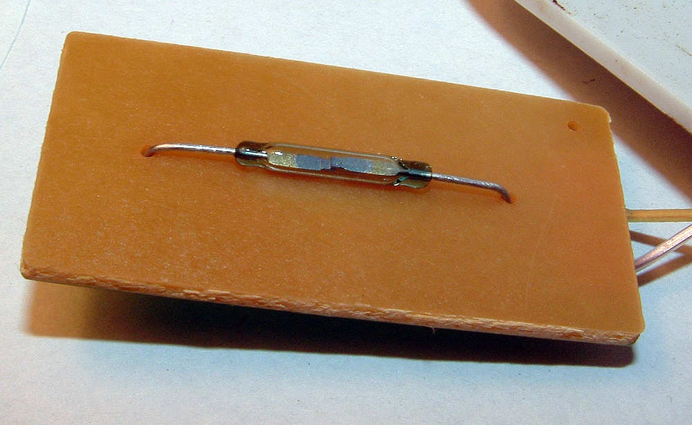
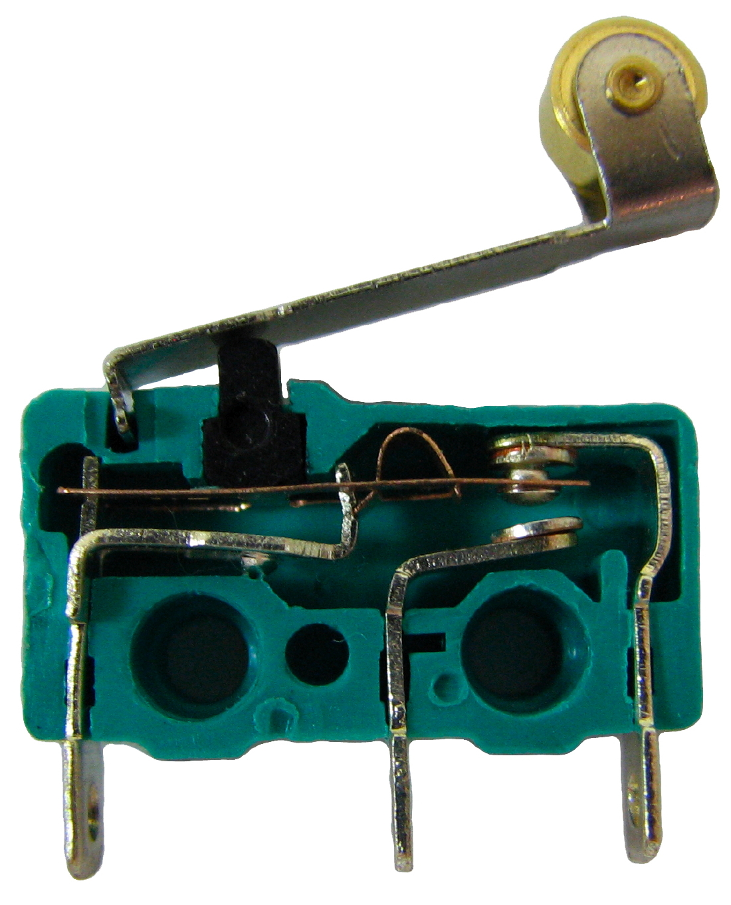

🔍 Clic para agrandar
Variante Más Común en Kits
Ampolla de Vidrio Transparente
Un tubito cilíndrico de vidrio transparente (mide unos 1.5 a 2 cm). De cada extremo sale un alambre metálico.
Cómo probarlo: Si miras de cerca a través del vidrio, verás dos pequeñas láminas metálicas separadas. Al acercar cualquier imán, se juntan físicamente haciendo contacto.
 🔍 Clic para agrandar
🔍 Clic para agrandar
Variante de Alarma de Casa
Sensor Magnético MC-38 (Cajas Blancas)
Dos piezas rectangulares de plástico blanco o café con agujeros para tornillos o adhesivo en los extremos.
Detalle: Una pieza lleva dos cables finos que van al ESP32. La otra pieza es un imán sólido idéntico sin ningún cable.

🔍 Clic para agrandar
Variante Mecánica de Contacto
Microswitch / Final de Carrera
Cajita plástica negra pequeña (mide unos 2 cm) con una lámina o palanquita metálica flexible que sobresale.
Cómo funciona: No usa imán; hace contacto físico cuando la puerta se cierra y presiona la palanquita con un "clic" audible.